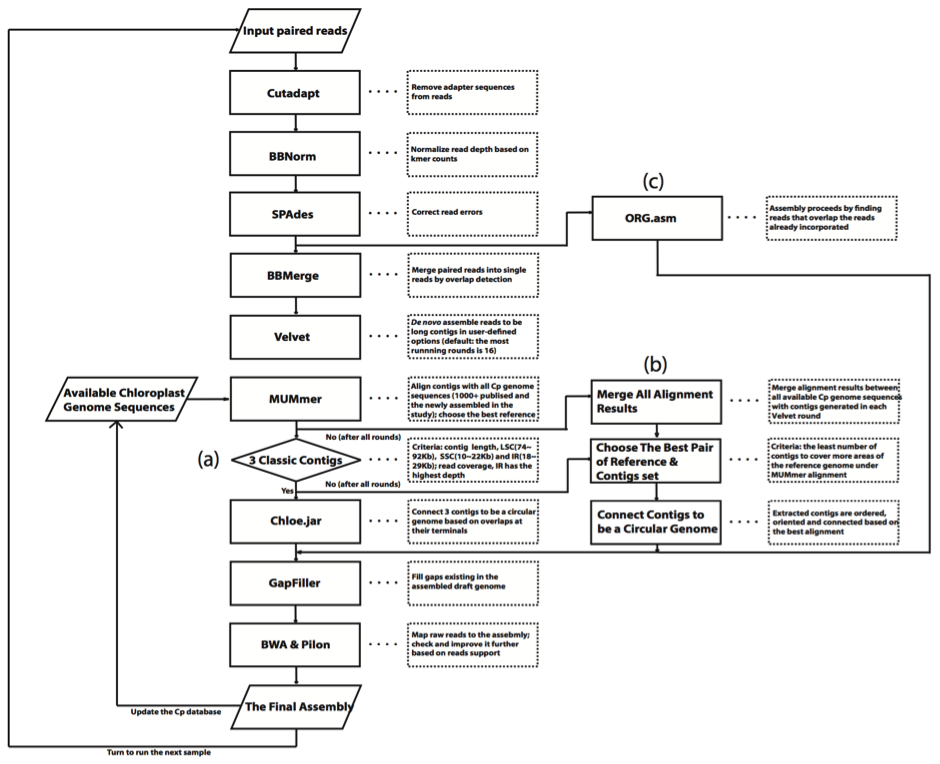

Plastids of the Pilbara
Information about the database

Hamersley Range by Stephen van Leeuwen. Licensed under CC BY 2.0
Overview
This website serves as a warehouse and search interface for 650 chloroplast genome sequences, collected from native plants that grow in the Pilbara region of Western Australia. By applying DNA sequencing to the problem of species identification, this project aims to improve the accuracy of biosurveys conducted at sites in Western Australia whilst also building a valuable data resource for scientific analysis related to the unique plants in this region.
Chloroplasts
The leaves of plants are enriched for chloroplasts, small organelles that carry out photosynthesis and that each contain a full copy of the chloroplast genome. The small size of the chloroplast genome, its high copy count, and the declining cost of modern DNA sequencing makes the chloroplast genome attractive as a DNA barcode for plant identification purposes.
In certain circumstances, it is not easy for an expert botanist to identify a plant specimen with high confidence. For example, it may not be possible to obtain seed or flower material to discriminate between otherwise highly similar species. Molecular techniques, such as DNA sequencing, can highlight very small genetic differences between samples to help resolve difficult cases and can also do this at scale. Typically, plant identification is conducted by expert botanists based on visual characteristics. This is made more difficult where species (such as grasses) have few distinguishing features or it is outside of flowering time. Consequently, there is increasing interest in molecular identification techniques as the capability of DNA sequencing technology has advanced rapidly over the last 10 years, matched by an equivalent decline in costs.
The Pilbara
The Pilbara region is economically significant as a major source of iron ore for global markets. It is also of natural significance, recognised as one of fifteen Australian biodiversity hotspots. creating a potential conflict between the conservation of flora and fauna, and the economic benefits of mining activities. Ideally, both objectives are aimed for, optimising resource extraction whilst minimising long-term environmental impact.
Western Australia's native habitats are protected by the Federal Government's Environment Protection and Biodiversity Conservation Act 1999 (EPBC Act) and by the WA Government's Environmental Protection Act 1986. As part of the approval process, mining companies submit an Environmental Assessment that describes expected environmental impacts of mining activities and the methods that will be used to minimise damage. Mining permits are administered at the State level and set out requirements that must be adhered to during active mining and post shutdown. Tenement holders that fail to comply with the environmental conditions of their tenement must pay an Unconditional Performance Bond, to be returned upon re-establishment of compliance.
Project collaborators
- Fortescue Metals Group Ltd
- ARC CoE for Mine Site Restoration
- ARC CoE in Plant Energy Biology
- WA Department of Parks and Wildlife
- Australian Genome Research Facility
- Bioplatforms Australia
Conducting a comprehensive and accurate biosurvey is essential for the compilation of a high quality environmental impact assessment and for the design of an appropriate rehabilitation system. Doing this cheaply and rapidly can be challenging in a region as remote, expansive and climatically harsh as the Pilbara.

An iron ore train loading at the Brockman 4 mine, Western Australia. by Calistemon (own work). Licensed under CC BY-SA 3.0
This database includes complete (or nearly complete) chloroplast genomes and rDNA ITS sequences for plant species found on mining tenures in the Pilbara region. To date, 672 samples have been sequenced, comprising 577 known species. Data for these can be viewed and downloaded at the data explorer section of this website.
Technical Methods
Specimen Selection
In consultation with taxonomic and identification specialists at the Western Australian Herbarium, plant samples were assigned an initial identification, linked to metadata and selected for sequencing according to the following critera:
- conservation-priority species that occur on mining tenure in the Pilbara that and are difficult to identify
- for each represented family, all other species that occur on mining tenure in the Pilbara
- off-tenure species from the Pilbara to increase breadth of taxonomic coverage
- quality, quantity and recency of sample
DNA Extraction
- extraction: DNeasy Plant Mini Kit (Qiagen) with slight modifications to the manufacturer's protocol.
- elution: 100 μl of AE buffer.
- quality control: NanoDrop ND-1000 spectrophotometer (ND-1000; Thermo Fisher Scientific).
- confirmation: gel electrophoresis and QUBIT fluorometric quantitation.
- enhancement: DNA Clean & ConcentratorTM-5 Kit (Zymo Research).
DNA Sequencing
Samples, with a minimum concentration 1 ng/ul, were sequenced at the Australian Genome Research Facility node in Melbourne, Victoria.
- sonication: Covaris E220 Focused Ultrasonicator (50 µl preps).
- library construction: TruSeq Nano DNA Library kits following manufacturer protocol (350bp median insert).
- library assessment: gel electrophoresis, Agilent D1000 ScreenTape Assay.
- library quantification: qPCR, KAPA Library Quantification Kits for Illumina.
- sequencing: Illumina HiSeq 2500, 2x125 bp paired-end, HiSeq PE Cluster Kit, v5 and HiSeq SBS Kit, v4 (250 cycles).
Chloroplast Genome Assembly
DNA sequence reads were assembled at the ARC CoE in Plant Energy Biology as follows:

- removed adapter sequences with cutadapt (v1.9.1).
- normalized read depth based on k-mer counts using BBNorm, (a tool in the BBMap package), with a k-mer low/high coverage cut-off of 10/500.
- corrected read errors using SPAdes (v3.6.1).
- merged overlapping paired-end reads using BBMerge (v8.82), another tool in BBMap package.
- assembled merged reads with Velvet (v1.2.10) with k-mer values of 51, 71, 91 and 111, and with low coverage cut-off values of 10, 7, 15 and 20. Velvet assembly was terminated if assembled contigs of a plastid under one set of parameters met the desired criteria for length and k-mer coverage.
- for each assembly, MUMmer (version 3.23) was used to align assembled contigs with all sequences in a local database comprising plastid genomes from GenBank (1366 organisms) and the newly assembled genomes in this study.
- for each assembly, the best reference sequence was chosen as that which covered the most sequence with the least number of contigs based in the alignment.
- aligned contigs were ordered, oriented and connected directly to be a single longer sequence if the assembled plastid sequences satisfied the above requirement. Otherwise, Velvet assembly under other coverage cut-off and k-mer values could be launched until all running rounds for one sample were finished. When quality contigs were not yet obtained using the de novo approach ultimately, assembly could be switched to reference-guided approach. The best pair of a reference and contigs set in all alignments was chosen and plastid contigs were connected to be a single sequence. Additionally, a new assembler, The ORGanelle ASeMbler (v b2.2) was used to assemble corrected reads into a single contig for all samples.
- draft genomes were refined by:
- for multiple assemblies of some samples, one assembly containing the maximum number of nucleotides supported by reads was kept.
- the resultant assembly was added to the local database and the protocol repeated for the next sample.